Timing gear case installation (4JJ1)
1. Timing gear case installation
1. Apply liquid gasket to the gasket.
Note
- Apply ThreeBond 1207B or equivalent to the area indicated in the diagram.
2. Apply liquid gasket to the cylinder block.
Note
- Apply ThreeBond 1207B or equivalent to the area indicated in the diagram.
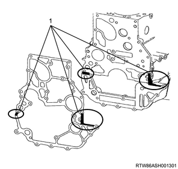
- Liquid gasket application area
3. Install the gasket to the cylinder block.
Caution
- Do not reuse the gasket.
4. Install the timing gear case to the cylinder block.
Note
- Align to the dowel pin, install the timing gear case, and then install the bolt in the order shown in the diagram.
Tightening torque： 25 N・m { 2.5 kgf・m / 18 lb・ft }
Caution
- Do not remove the bolt (7) indicated in the diagram during maintenance.

- Timing gear case
- Bolt L = 25 mm {0.98 in}
- Bolt L = 60 mm {2.36 in}
- Bolt L = 45 mm {1.77 in}
- Bolt L = 35 mm {1.38 in}
- Bolt L = 16 mm {0.63 in}
- Bolt
2. Timing gear case bracket installation
1. Temporarily tighten the timing gear case bracket to the timing gear case and the cylinder block.
Note
- Temporarily tighten the nut and bolt on the gear case side.
- Temporarily tighten the bolt on the cylinder block side.
2. Securely tighten the timing gear case bracket to the timing gear case and the cylinder block.
Note
- Temporarily tighten the nut and bolt on the gear case side.
- Temporarily tighten the bolt on the cylinder block side.
Tightening torque： 25 N・m { 2.5 kgf・m / 18 lb・ft }
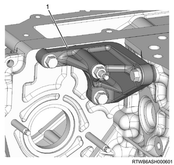
- Timing gear case bracket
3. Oil pump assembly installation
1. Apply the engine oil to the oil pump gear.
2. Install the oil pump to the timing gear case.
Tightening torque： 25 N・m { 2.5 kgf・m / 18 lb・ft }

- Oil pump
4. Crank gear installation
1. Install the crank gear to the crankshaft.
5. Crankshaft adjustment
1. Align the No.1 cylinder to compression top dead center.
Note
- Turn the crankshaft in the forward direction (clockwise) to align the 1st cylinder piston to compression top dead center.

- Top dead center alignment mark on the gear case cover
- Top dead center alignment mark on the crank pulley
6. Idle gear C installation
1. Apply the engine oil to the idle gear C shaft.
Note
- Apply it to the gear assembly sections.
2. Install the idle gear C shaft to the timing gear case.
3. Install the idle gear C to the idle gear C shaft.
4. Apply the engine oil to the bolt.
Note
- Apply it to the thread and the seat.
5. Temporarily tighten the bolt to the timing gear case.

7. Idle gear A installation
1. Fasten the sub gear to the idle gear A.
Note
- When fixing of the sub gear is released.
- Tighten the sub gear mounting bolt.
- Turn the sub gear to the right until the M6 bolt holes between the idle gear A and sub gear are aligned, by using a sub gear and a lever.
- Install the M6 bolt with the appropriate torque so that the sub gear does not move.

Note
- Align the oil holes of the cylinder block and the idle gear A shaft.
2. Apply the engine oil to the idle gear A shaft.
3. Install the idle gear A shaft to the timing gear case.
4. Install the idle gear A to the idle gear A shaft.
Note
- Install the idle gear A with the alignment mark aligned.
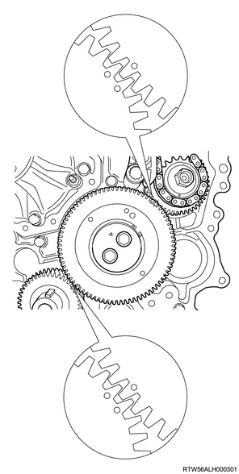
Caution
- Do not align the alignment marks shown in the following diagram.
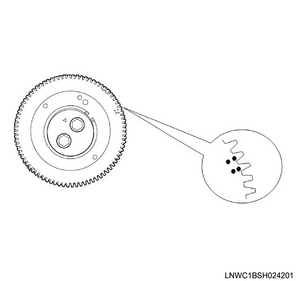
5. Install the idle gear A flange to the idle gear A.
6. Apply the engine oil to the bolt.
Note
- Apply it to the threaded portion and the seat surface.
7. Temporarily tighten the bolt to the timing gear case.
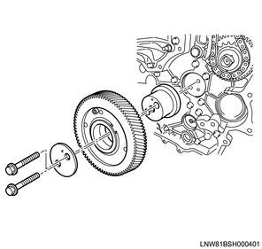
8. Securely tighten the bolt to the timing gear case.
Tightening torque： 32 N・m { 3.3 kgf・m / 24 lb・ft } Idle gear A
Tightening torque： 59 N・m { 6.0 kgf・m / 44 lb・ft } Idle gear C

- Idle gear A bolt
- Idle gear C bolt
9. Remove the bolt from the idle gear A.
Note
- Remove the M6 bolt.
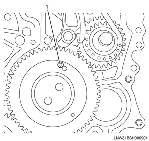
- M6 bolt
8. Gear case cover installation
1. Apply liquid gasket to the timing gear case.
Note
- Apply ThreeBond 1207B to the area indicated in the diagram.
Caution
- Within 5 minutes of applying the liquid gasket, install the cover.

- Liquid gasket application area
2. Install the gasket to the gear case cover.
Caution
- Do not reuse the gasket.
3. Install the gear case cover to the timing gear case.
Tightening torque： 8 N・m { 0.8 kgf・m / 71 lb・in }
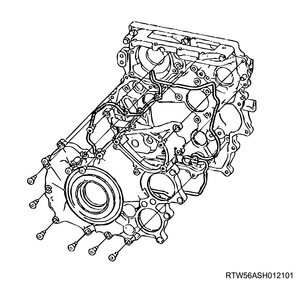
9. Cover installation
1. Install the cover to the gear case cover.
Tightening torque： 10 N・m { 1.0 kgf・m / 89 lb・in }
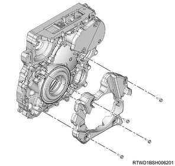
10. Vacuum pump assembly installation
1. Install the vacuum pump assembly to the gear case cover.
Tightening torque： 25 N・m { 2.5 kgf・m / 18 lb・ft }
2. Install the vacuum pump oil pipe to the vacuum pump assembly and the cylinder block.

Tightening torque： 12 N・m { 1.2 kgf・m / 106 lb・in }
3. Install the vacuum hose to the vacuum pipe and the vacuum pump assembly.
Tightening torque： 25 N・m { 2.5 kgf・m / 18 lb・ft }

11. Power steering oil pump assembly installation
1. Install the power steering oil pump to the timing gear case.
Tightening torque： 25 N・m { 2.5 kgf・m / 18 lb・ft }

- Power steering oil pump
- Nut
2. Install the power steering oil hose to the bracket.

- Bracket
12. Water pump assembly installation
1. Install the water pump assembly to the timing gear case.
Caution
- Do not reuse the gasket.
Tightening torque： 25 N・m { 2.5 kgf・m / 18 lb・ft }
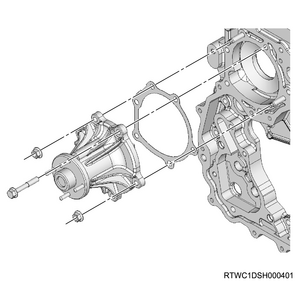
13. Crankshaft pulley installation
1. Install the crankshaft pulley to the crankshaft.
Note
- Align the crankshaft pulley to the key of the crankshaft and install it.
- Hold the fly wheel ring gear in a stopped state, and lock the crankshaft when tightening the crankshaft pulley bolt.
Tightening torque： 294 N・m { 30.0 kgf・m / 217 lb・ft }
Caution
- Take care not to damage the crankshaft damper pulley boss portion.
- Make sure to use a new crank pulley bolt and washer.

14. Cylinder head gasket preparation
1. Select the cylinder head gasket.
Note
- Select the grade for the cylinder head gasket by measuring the protrusion amount of the piston head.
- Three types of gaskets with different thickness are provided.
- Select the appropriate grade from three types of gaskets following the following steps.
- Before measurement, remove carbon from the piston head and the cylinder block surface, and clean the gasket installation portion.
2. Measure the piston using a dial gauge.
Note
- Measure the protrusion amount of the piston head.
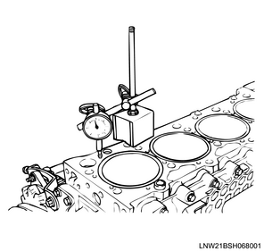
Note
- Refer to the diagram for the measurement position of the protrusion amount.
- Make sure that the measurement point is as close to the cylinder block as possible.

- Measurement point
- Measurement point
- Measurement point
- Measurement point
Note
- Measure the points 1, 2, 3, and 4 to calculate the difference between 1 and 2, and between 3 and 4 of each cylinder.
3. Calculate average value from measured value.
Note
- Calculate the average value for the protrusion amount of the piston head for each cylinder.
- Select the gasket grade required by the aforementioned average value using the chart below.
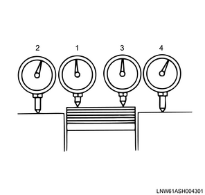
- Measurement point
- Measurement point
- Measurement point
- Measurement point
Note
- Cylinder head gasket combination
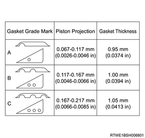
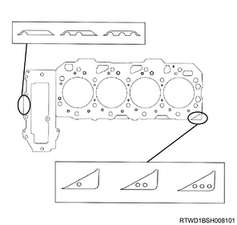
Note
- The differences in the protrusion amount of each piston should be less than or equal to 0.05 mm {0.002 in}.
15. Cylinder head gasket installation
1. Apply liquid gasket to the cylinder block.
Note
- Apply ThreeBond-1207B or equivalent to the cylinder block as shown in the diagram.
Bead height： 2 to 3 mm { 0.079 to 0.118 in }
Bead width： 3 to 4 mm { 0.118 to 0.157 in }
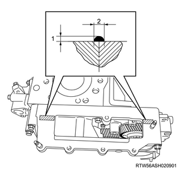
- Bead height
- Bead width
Caution
- After applying the liquid gasket, install the cylinder head within 5 minutes.
16. Cylinder head assembly installation
1. Install the cylinder head assembly to the cylinder block.
Note
- Wipe off the bottom surface of the cylinder head.
- Adjust the cylinder block dowel to install the cylinder head.
2. Apply the engine oil to the head bolt.
Note
- Apply to the threaded portions, seating surfaces, and washers of the bolts.
3. Install the head bolt to the cylinder head.
Caution
- Use new head bolts.
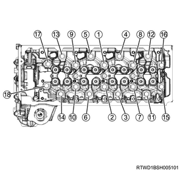
4. Tighten the head bolt using a torque wrench.
Note
- Tighten the head bolts in the order shown in the diagram.
Tightening torque： 70 N・m { 7.1 kgf・m / 52 lb・ft }
5. Tighten the head bolt using a torque wrench.
Note
- Tighten the head bolts in the order shown in the diagram.
Tightening torque： 70 N・m { 7.1 kgf・m / 52 lb・ft }
6. Tighten the head bolt using special tool.
Note
- Tighten the head bolts in the order shown in the diagram using an angle gauge.

SST: 5-8840-0266-0 - angle gauge
Specified angle： 60 to 75 °
7. Tighten the head bolt using special tool.
Note
- Tighten the head bolts in the order shown in the diagram using an angle gauge.
Specified angle： 60 to 75 °
8. Install the bolt to the timing gear case.
9. Install the nut to the timing gear case.
Note
- Tighten it to the prescribed torque according to the order given in the diagram.
Tightening torque： 25 N・m { 2.5 kgf・m / 18 lb・ft }
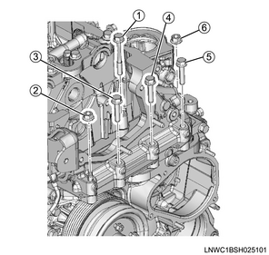
10. Remove the wire from the engine hanger and the hoist.
11. Remove the rear engine hanger from the cylinder head.
12. Remove the front engine hanger from the cylinder head.
17. Camshaft bracket installation
1. Align the camshaft to the alignment mark.
Note
- Align the marks on the inlet camshaft and exhaust camshaft with the mark on the bearing cap.
Caution
- Confirm that the valve cap is correctly installed to the valve stem end.
- Be careful of valve cap detachment or looseness.

- Alignment mark
2. Apply the engine oil to the bolt.
Note
- Apply to the threaded portion and seating surface of the M8 bolt.
3. Temporarily tighten the camshaft bracket to the cylinder head.
4. Securely tighten the camshaft bracket to the cylinder head.
Note
- Tighten the M8 bolts in the order shown in the diagram.
Tightening torque： 18 N・m { 1.8 kgf・m / 13 lb・ft } Wet

18. Timing chain guide installation
1. Install the timing chain guide to the cylinder head and the cylinder block.
Tightening torque： 25 N・m { 2.5 kgf・m / 18 lb・ft }

19. Timing chain tension lever installation
1. Install the timing chain tension lever to the cylinder head.
Note
- Place the timing chain tension lever in between the timing gear case and the cylinder block.
20. Timing chain installation
1. Install the sprocket to the idle gear D.
Note
- Install together with the timing chain.
Tightening torque： 8 N・m { 0.8 kgf・m / 71 lb・in }
2. Install the sleeve to the sprocket.
Tightening torque： 59 N・m { 6.0 kgf・m / 44 lb・ft }
21. Fuel supply pump installation
1. Apply soapy water to the O-ring.
2. Install the O-ring to the fuel supply pump.
Caution
- Be careful not to twist it.
3. Install the fuel supply pump to the timing gear case.
Tightening torque： 25 N・m { 2.5 kgf・m / 18 lb・ft }

- Fuel supply pump
Note
- Confirm that the supply pump camshaft key is at a horizontal position on the right side.
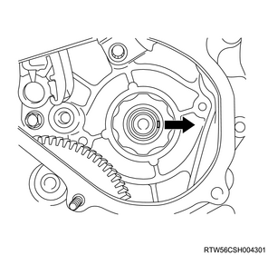
22. Supply pump gear installation
1. Install the supply pump gear to the fuel supply pump.
Note
- Align the alignment mark of the supply pump gear and the mark on idle gear A.
- Verify that the supply pump gear and the main gear of idle gear A are engaged.
- Push in the supply pump gear while the supply pump gear is engaged with the sub gear of idle gear A.

- Alignment mark of the supply pump gear
- Idle gear marking
- Main gear
- Sub gear
23. Sprocket installation
1. Install the timing chain to the sprocket.
Note
- Install it to each sprocket.
2. Align the timing chain to the alignment mark.
Note
- Align the timing mark of the crankshaft sprocket and the timing chain link of the dark plate.
- Align the timing mark of the fuel supply sprocket and the timing chain link of the yellow plate.
3. Temporarily tighten the sprocket to the supply pump gear.
Note
- Align the dowel pin attached to the gear, and install the fuel supply pump sprocket to the fuel pump shaft.
- Tighten the fuel supply pump shaft nut by hand.
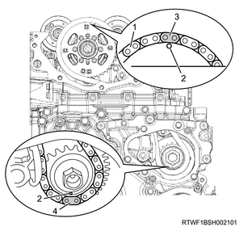
- Timing mark
- Dark plate
- Timing mark
- Yellow plate
24. Timing chain lever pivot installation
1. Temporarily tighten the timing chain lever pivot to the timing chain tension lever.
Note
- Tighten the pivot bolt by hand.
- Confirm that the tension lever moves smoothly.

25. Timing chain tensioner installation
1. Connect the hook to the pin.
Note
- Keep the state where the latch is being pushed.
- Insert the plunger.
- Install the hook to the pin, and fasten the plunger.

- Pin
- Plunger
- Latch
- Timing chain tensioner
- Hook
2. Install the timing chain tensioner to the cylinder head.
Tightening torque： 10 N・m { 1.0 kgf・m / 89 lb・in }
Caution
- Do not reuse the gasket.
3. Install the oil pipe to the timing chain tensioner.
Tightening torque： 14.7 N・m { 1.5 kgf・m / 11 lb・ft }

- Oil pipe
- Timing chain tensioner
- Gasket
4. Disconnect the hook from the pin.
Note
- Lightly push the area indicated with an arrow in the diagram.
- The hook of the tensioner opens and the plunger pushes the tension lever to pull the chain.
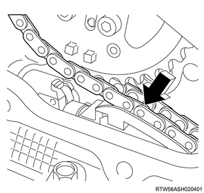
26. Supply pump gear nut installation
1. Securely tighten the sprocket to the supply pump gear.
Tightening torque： 130 N・m { 13.3 kgf・m / 96 lb・ft }

- Nut
2. Securely tighten the timing chain lever pivot to the timing chain tension lever.
Tightening torque： 27 N・m { 2.8 kgf・m / 20 lb・ft }
27. Rocker arm adjustment
1. Align the No.1 cylinder to compression top dead center.
Note
- Turn the crankshaft in the forward direction (clockwise) to align the 1st cylinder piston to compression top dead center.
- Top dead center alignment mark on the gear case cover side
- Top dead center alignment mark on the crank pulley side
2. Loosen the adjust screw using special tool.
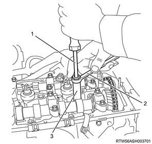
- Driver
- Ring spanner
- Adjust nut wrench

SST: 5-8840-2822-0 - valve clearance adjust nut wrench
3. Adjust the valve clearance to a standard value using a feeler gauge.
Note
- Insert a 0.15 mm {0.0059 in} feeler gauge between the rocker arm roller and the cam, and tighten the rocker arm adjust screw.
- When the movement of the feeler gauge becomes stiff, fasten the adjust screw nut of the rocker arm.
Tightening torque： 18 N・m { 1.8 kgf・m / 13 lb・ft }
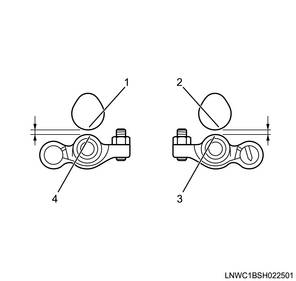
- Cam: Exhaust side
- Cam: Intake side
- Roller: Intake side
- Roller: Exhaust side
Note
- When the No. 1 cylinder is at the compression top dead center, a circle is marked in the table; when the No. 4 cylinder is at the compression top dead center, an X is marked in the table for adjustment of valve clearance.
| Cylinder No. | 1 | 2 | 3 | 4 | ||||
| Valve arrangement | IN | EX | IN | EX | IN | EX | IN | EX |
| When No. 1 cylinder is at compression top dead center | O | O | O | O | ||||
| When No. 4 cylinder is at compression top dead center | X | X | X | X | ||||
Caution
- Make sure to adjust while cool.
28. Baffle plate installation
1. Install the baffle plate to the cylinder head.
Caution
- Do not interfere with camshaft bracket mounting bolts.
Tightening torque： 10 N・m { 1.0 kgf・m / 89 lb・in }

29. Timing chain upper cover installation
1. Apply liquid gasket to the timing chain upper cover.
Note
- Apply ThreeBond 1217H or equivalent.
Bead height： 1.0 to 1.5 mm { 0.039 to 0.059 in }
Bead width： 2.0 to 2.5 mm { 0.079 to 0.098 in }
Caution
- Within 5 minutes of applying the liquid gasket, install the cover.

- Liquid gasket
- Bead height
- Bead width
Caution
- Wipe off any excess liquid gasket.
2. Install the timing chain upper cover to the cylinder head.
Tightening torque： 25 N・m { 2.5 kgf・m / 18 lb・ft }
30. CMP sensor connect
1. Connect the connector to the CMP sensor.

- CMP sensor
31. Timing chain lower cover installation
1. Apply liquid gasket to the timing chain lower cover.
Note
- Apply ThreeBond 1207C or equivalent.
Bead height： 2.0 to 2.5 mm { 0.079 to 0.098 in }
Bead width： 2.0 to 2.5 mm { 0.079 to 0.098 in }
Caution
- Within 5 minutes of applying the liquid gasket, install the cover.

- Liquid gasket
- Bead height
- Bead width
2. Install the timing chain lower cover to the gear case cover.
Tightening torque： 10 N・m { 1.0 kgf・m / 89 lb・in }
32. Noise cover installation
1. Install the noise cover to the timing chain lower cover.
Tightening torque： 10 N・m { 1.0 kgf・m / 89 lb・in }

33. Injector installation
1. Apply the engine oil to the O-ring.
2. Install the O-ring to the injector.
3. Install the injector gasket to the cylinder head.
Note
- Drop the injector gasket into the port on the cylinder head side.
Caution
- Do not reuse the injector gasket.
- Before assembling the injector gasket, clean foreign material or dirt from the cylinder head and the injector.
Note
- Check that the injector gasket is seated horizontally.
- Check whether the injector gasket was inserted by checking the nozzle height.
Caution
- Press the injector in perpendicularly to ensure that the injector gasket is not slanted.
- Do not press in by holding the injector connector.
- When the clamp is tightened, the injector gasket is pushed in until it hits the end of the injector. Therefore, do not push the gasket in the injector by force.
- Do not reuse the leak-off pipe and the clip.

- Injector
- Leak-off pipe
- Clip
- O-ring
- Injector gasket
4. Install the injector clamp to the injector.

- Injector
- Bolt
- Injector clamp
5. Apply the engine oil to the bolt.
Note
- Apply it to the threaded portion and the seat surface.
6. Install the injector to the cylinder head.
7. Temporarily tighten the injector clamp to the cylinder head.
34. Injection pipe installation
1. Apply the engine oil to the injection pipe.
Note
- Apply engine oil to the injector side sleeve nut threaded portion and the O-ring of the injector.
2. Temporarily tighten the injection pipe to the injector and the common rail (fuel rail) assembly.
Note
- Temporarily tighten the sleeve nut by hand until the nut does not turn.

3. Temporarily tighten the clip to the injection pipe.
4. Securely tighten the injector clamp to the cylinder head.
Tightening torque： 26 N・m { 2.7 kgf・m / 19 lb・ft }
5. Securely tighten the injection pipe to the injector and the common rail (fuel rail) assembly.
Tightening torque： 29.5 N・m { 3.0 kgf・m / 22 lb・ft } Injector side
Tightening torque： 29.5 N・m { 3.0 kgf・m / 22 lb・ft } Common rail (fuel rail) side
Caution
- Do not reuse the injection pipe.
6. Securely tighten the clip to the injection pipe.
Tightening torque： 10 N・m { 1.0 kgf・m / 89 lb・in }
35. Cylinder head cover installation
1. Apply liquid gasket to the cylinder head.
Note
- Apply ThreeBond 1217H or 1207C to the mating surface with the cylinder head.
Caution
- Within 5 minutes of applying the liquid gasket, install the cover.
- Remove the dust flange from the oil seal section on the injector connector side.
Bead width： 2.0 to 2.5 mm { 0.079 to 0.098 in }
Bead height： 1.0 to 1.5 mm { 0.039 to 0.059 in }

- Liquid gasket
- Bead width
- Bead height
2. Install the cylinder head cover to the cylinder head.
Caution
- Do not reuse the cylinder head cover gasket.
Note
- Temporarily tighten in the order shown in the diagram.
Tightening torque： 5 N・m { 0.5 kgf・m / 44 lb・in }

Note
- Firmly tighten in the order shown in the diagram.
Tightening torque： 9 N・m { 0.9 kgf・m / 80 lb・in }
3. Connect the harness clip to the cylinder head cover.

36. Vacuum pipe installation
1. Install the vacuum pipe to the cylinder head cover.
Tightening torque： 25 N・m { 2.5 kgf・m / 18 lb・ft }
37. Fuel leak-off hose installation
1. Install the leak-off pipe to the injector.

- Leak-off pipe
- Clip
2. Install the fuel leak-off hose to the leak-off pipe.

- Fuel leak-off hose
- Connector
Caution
- Do not reuse the leak-off pipe and the clip.
38. Injector connect
1. Connect the harness connector to the injector.
39. Oil filter installation
1. Install the gasket to the oil cooler.
Caution
- Do not reuse the gasket.
2. Install the oil filter to the oil cooler.
Note
- Tighten in the order shown in the diagram.
Caution
- Take sufficient care to prevent dust and foreign materials from getting inside.

Tightening torque： 25 N・m { 2.5 kgf・m / 18 lb・ft }
40. Generator bracket installation
1. Install the generator bracket to the cylinder block.
Tightening torque： 51 N・m { 5.2 kgf・m / 38 lb・ft }

41. Idle pulley installation
1. Temporarily tighten the idle pulley to the generator bracket.
Note
- Tighten in the order shown in the diagram.
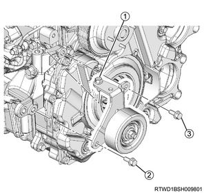
2. Securely tighten the idle pulley to the generator bracket.
Note
- Tighten in the order shown in the diagram.
Tightening torque： 51 N・m { 5.2 kgf・m / 38 lb・ft }
42. Water intake pipe installation
1. Temporarily tighten the water intake pipe to the cylinder block.
Note
- Temporarily tighten in the order shown in the diagram.
Caution
- Do not reuse the gasket.

2. Securely tighten the water intake pipe to the cylinder block.
Note
- Firmly tighten in the order shown in the diagram.
Tightening torque： 25 N・m { 2.5 kgf・m / 18 lb・ft }
43. EGR water pipe installation
1. Install the EGR water pipe to the oil cooler.
Tightening torque： 25 N・m { 2.5 kgf・m / 18 lb・ft }
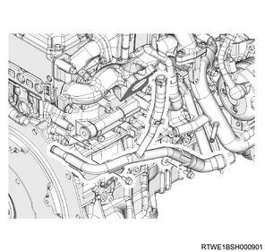
2. Connect the EGR water pipe to the water intake pipe.
44. Catalyst converter installation
1. Install the catalyst converter to the turbocharger assembly.
Tightening torque： 27 N・m { 2.8 kgf・m / 20 lb・ft }

Caution
- Do not reuse the gasket.
2. Temporarily tighten the catalyst converter to the crankcase.
Note
- Temporarily tighten in the order shown in the diagram.

3. Securely tighten the catalyst converter to the crankcase.
Note
- Firmly tighten in the order shown in the diagram.
Tightening torque： 94 N・m { 9.6 kgf・m / 69 lb・ft }
4. Connect the catalyst converter to the front exhaust pipe.
Tightening torque： 67 N・m { 6.8 kgf・m / 49 lb・ft }

Caution
- Do not reuse the gasket.
45. Oil return pipe installation
1. Install the oil return pipe to the turbocharger and the crankcase.
Tightening torque： 10 N・m { 1.0 kgf・m / 89 lb・in } Turbocharger side
Tightening torque： 25 N・m { 2.5 kgf・m / 18 lb・ft } Crankcase side
Caution
- Do not reuse the gasket.

46. Turbocharger feed oil pipe installation
1. Install the turbocharger feed oil pipe to the turbocharger and the oil cooler.
Tightening torque： 23 N・m { 2.3 kgf・m / 17 lb・ft }
Caution
- Do not reuse the gasket.

- Turbocharger feed oil pipe
47. Turbocharger water return hose connect
1. Connect the turbocharger water return hose to the water feed and return pipe.
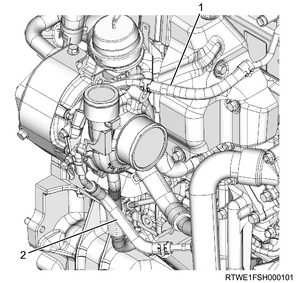
- Turbocharger water feed hose
- Turbocharger water return hose
48. Exhaust manifold heat protector installation
1. Install the exhaust manifold heat protector to the exhaust manifold.
Tightening torque： 25 N・m { 2.5 kgf・m / 18 lb・ft }
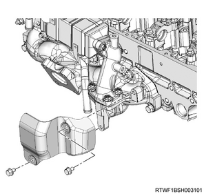

49. Water hose connect
1. Connect the water hose to the EGR cooler.
Note
- Connect both the feed hose and the return hose to the EGR cooler.

- Return hose
- Feed hose
50. Vacuum hose installation
1. Install the vacuum hose to the turbocharger and the vacuum pipe.

51. Turbocharger water feed pipe connect
1. Connect the turbocharger water feed hose to the water feed and return pipe.
- Turbocharger water feed hose
- Turbocharger water return hose
52. Water pipe installation
1. Install the water pipe to the cylinder head assembly.
Tightening torque： 10 N・m { 1.0 kgf・m / 89 lb・in } Bolt, nut

2. Connect the turbocharger water feed hose to the outlet pipe.
53. Glow plug installation
1. Install the glow plug to the cylinder head.
Tightening torque： 18 N・m { 1.8 kgf・m / 13 lb・ft }
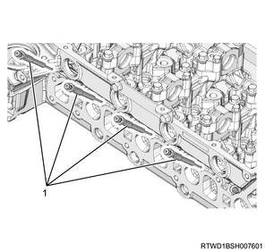
- Glow plug
54. Glow plug connector installation
1. Install the glow plug connector to the glow plug.
Note
- Install it together with the glow plug terminal.
Tightening torque： 1 N・m { 0.1 kgf・m / 9 lb・in }
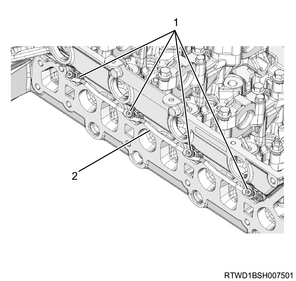
- Glow plug terminal
- Glow plug connector
55. Bracket installation
1. Install the bracket to the cylinder head cover.
Note
- Install as a set with the turbocharger control solenoid.
Tightening torque： 25 N・m { 2.5 kgf・m / 18 lb・ft }

2. Connect the connector to the turbocharger control solenoid.
56. Leak-off pipe installation
1. Install the leak-off pipe to the fuel supply pump and the common rail (fuel rail) assembly.
Tightening torque： 10.3 N・m { 1.1 kgf・m / 91 lb・in }

- Leak-off pipe
57. Vacuum hose connect
1. Install the harness bracket to the inlet manifold and the common rail (fuel rail) bracket.
2. Connect the vacuum hose to the vacuum pipe.
58. Fuel hose connect
1. Connect the fuel hose to the fuel supply pump.

- Fuel hose
2. Connect the fuel hose to the leak-off pipe.
59. Vacuum hose connect
1. Connect the vacuum hose to the inlet manifold.
60. EGR valve connect
1. Connect the connector to the EGR valve.
61. Intake throttle valve installation
1. Install the gasket to the intake throttle valve.
Caution
- Do not reuse the gasket.
2. Install the intake throttle valve to the inlet manifold.
Tightening torque： 10 N・m { 1.0 kgf・m / 89 lb・in }

- Intake throttle valve
- Gasket
62. Intake throttle valve connect
1. Connect the connector to the intake throttle valve.
63. Oil level gauge guide tube installation
1. Apply the engine oil to the O-ring.
2. Install the oil level gauge guide tube to the crankcase.
Tightening torque： 25 N・m { 2.5 kgf・m / 18 lb・ft }
64. Fan shroud installation
1. Install the fan guide to the radiator.
Note
- Install the lower fan guide together with the fan shroud.
65. Fan pulley installation
1. Install the fan pulley to the water pump assembly.
66. Cooling fan clutch installation
1. Install the cooling fan clutch to the water pump assembly.
Note
- Install the part together with the cooling fan.

Tightening torque： 8 N・m { 0.8 kgf・m / 71 lb・in }
67. Cooling fan installation
1. Install the cooling fan to the fan clutch assembly.
Tightening torque： 8 N・m { 0.8 kgf・m / 71 lb・in }

- Fan clutch assembly
- Cooling fan
68. Fan guide installation
1. Install the fan guide to the radiator.
Note
- Install the upper fan guide.

- Upper fan guide
- Clip
- Lower fan guide
- Fan shroud
69. Tension pulley installation
1. Install the tension pulley to the cylinder head.
Tightening torque： 25 N・m { 2.5 kgf・m / 18 lb・ft }

70. A/C compressor bracket installation
1. Install the A/C compressor bracket to the cylinder head.
Note
- Tighten in the order shown in the diagram.
Tightening torque： 25 N・m { 2.5 kgf・m / 18 lb・ft }
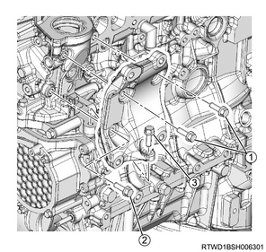
71. A/C compressor assembly connect
1. Install the A/C compressor assembly to the A/C compressor bracket.
Tightening torque： 51 N・m { 5.2 kgf・m / 38 lb・ft }

- A/C compressor bracket
- A/C compressor
72. Generator installation
1. Install the generator to the lower bracket.

2. Install the upper bracket to the generator and the timing gear case.
Tightening torque： 25 N・m { 2.5 kgf・m / 18 lb・ft }

73. Cooling fan belt installation
1. Install the cooling fan belt to the pulley.
74. Cooling fan belt adjustment
1. Adjust tension to the specified value using a tension meter.
Note
- Turn the adjust bolt to adjust the tension.
2. Check tension of the cooling fan belt.
Note
- When adjusting the amount of flex to the original value
- Apply a load to measurement point 1 of the cooling fan belt and adjust the amount of flex.
Load： 98 N { 10 kg / 22 lb }
| Position of belt tension | |
| Amount of flex | |
| New product | ： 5.0 to 6.0 mm { 0.197 to 0.236 in } |
| Reuse | ： 7.0 to 7.8 mm { 0.276 to 0.307 in } |
Note
- When adjusting the tension by using a sonic tension meter
- Measure the frequency at measurement point 1 with a sonic tension meter.
| Position of the belt tension | |
| Frequency | |
| New | ： 207 to 231 Hz |
| Reuse | ： 176 to 190 Hz |

- Measurement point 1
- Measurement point 2
- Measurement point 3
- Measurement point 4
- Adjust bolt (A/C compressor drive belt)
Note
- After adjusting the tension, tighten the tensioner fixing nut.
Tightening torque： 41 N・m { 4.2 kgf・m / 30 lb・ft }
Note
- If the cooling fan belt is replaced with a new one, make the new cooling fan belt fit in to cope with initial elongation.
- After making the cooling fan belt fit in, adjust its tension once again.
75. A/C compressor drive belt installation
1. Install the A/C compressor drive belt to the pulley.

- A/C compressor drive belt
76. A/C compressor drive belt adjustment
1. Adjust tension to the specified value using a tension meter.
Note
- When adjusting the amount of flex to the original value
- Apply a load to measurement points 2, 3, and 4 of the A/C compressor drive belt and adjust the amount of flex.
Load： 98 N { 10 kg / 22 lb }
| Measurement point 2 | |
| Amount of flex | |
| For a new product | ： 12.4 to 16.4 mm { 0.488 to 0.646 in } |
| When reused | ： 16.5 to 19.1 mm { 0.650 to 0.752 in } |
| Measurement point 3 | |
| Amount of flex | |
| For a new product | ： 12.5 to 16.5 mm { 0.492 to 0.650 in } |
| When reused | ： 16.5 to 19.1 mm { 0.650 to 0.752 in } |
| Measurement point 4 | |
| Amount of flex | |
| For a new product | ： 15.9 to 20.7 mm { 0.626 to 0.815 in } |
| When reused | ： 20.7 to 23.7 mm { 0.815 to 0.933 in } |
Note
- When adjusting the tension by using a sonic tension meter
- Measure the frequency at measurement points 2, 3, and 4 with a sonic tension meter.
| Measurement point 2 | |
| Frequency | |
| For a new product | ： 92 to 112 Hz |
| When reused | ： 80 to 92 Hz |
| Measurement point 3 | |
| Frequency | |
| For a new product | ： 92 to 112 Hz |
| When reused | ： 79 to 91 Hz |
| Measurement point 4 | |
| Frequency | |
| For a new product | ： 70 to 86 Hz |
| When reused | ： 62 to 70 Hz |
- Measurement point 1
- Measurement point 2
- Measurement point 3
- Measurement point 4
- Adjust bolt (A/C compressor drive belt)
Note
- After adjusting the tension, tighten the tensioner fixing nut.
Tightening torque： 41 N・m { 4.2 kgf・m / 30 lb・ft }
77. Generator connect
1. Connect the harness to the generator.
Tightening torque： 12 N・m { 1.2 kgf・m / 106 lb・in } Terminal nut
78. Radiator reserve tank installation
1. Install the radiator reserve tank to the upper fan guide.
Tightening torque： 8 N・m { 0.8 kgf・m / 71 lb・in }

2. Connect the radiator reserve tank hose to the radiator.
Note
- When the radiator reserve tank is dirty, clean it before installation.
- Clean the radiator reserve tank using detergent.
- Scrub inside with detergent and water.
- Wash with clean water, and drain the water.
79. Radiator upper hose installation
1. Install the radiator upper hose to the water outlet pipe and the radiator.
Tightening torque： 5 N・m { 0.5 kgf・m / 44 lb・in }

- Radiator upper hose
80. Battery installation
1. Install the battery to vehicle.

- Battery cable
- Battery bracket
- Earth
2. Install the battery bracket to the frame.
Tightening torque： 4 N・m { 0.4 kgf・m / 35 lb・in } Battery side
Tightening torque： 20 N・m { 2.0 kgf・m / 15 lb・ft } Frame side
3. Connect the battery cable to the battery.
4. Connect the battery ground cable to the frame.
81. Heater pipe installation
1. Temporarily tighten the heater pipe to the inlet manifold.
Note
- Tighten the bolts in the order shown in the diagram.
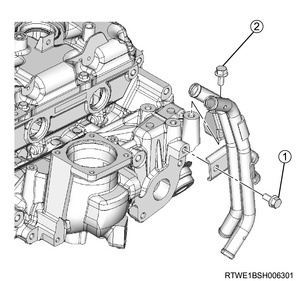
2. Securely tighten the heater pipe to the inlet manifold.
Note
- Tighten the bolts in the order shown in the diagram.
Tightening torque： 25 N・m { 2.5 kgf・m / 18 lb・ft }
3. Connect the heater hose to the heater pipe.

- Heater hose
82. Intake air duct installation
1. Install the intake air duct to the intake throttle valve and the intercooler.
Note
- Align the marks on the pipe side and hose side.
Tightening torque： 10 N・m { 1.0 kgf・m / 89 lb・in } Bolt
Tightening torque： 4 N・m { 0.4 kgf・m / 35 lb・in } Clamp (Intake throttle side)
Tightening torque： 5 N・m { 0.5 kgf・m / 44 lb・in } Clamp (Intercooler side)

83. Boost pressure sensor connect
1. Connect the connector to the boost pressure sensor.

84. Air cleaner assembly installation
1. Install the air cleaner assembly to vehicle.
Tightening torque： 20 N・m { 2.0 kgf・m / 15 lb・ft }

- Air cleaner assembly
- MAF sensor
- Vacuum hose
- Blow-by hose
- Intake pipe
- Barometric pressure sensor
2. Connect the intake pipe to the turbocharger assembly.
Tightening torque： 4 N・m { 0.4 kgf・m / 35 lb・in }
Note
- Install by aligning the alignment mark position as shown in the diagram.

- Alignment mark
3. Connect the vacuum hose to the air cleaner assembly.
4. Connect the harness connector to the barometric pressure sensor.
5. Connect the harness connector to the MAF sensor.
85. Blow-by hose connect
1. Connect the blow-by hose to the cylinder head cover.
86. Intake air duct installation
1. Install the intake air duct to the turbocharger and the intercooler.
Caution
- Referring to the diagram, face the threaded portion of the clamp toward the engine front.
Tightening torque： 25 N・m { 2.5 kgf・m / 18 lb・ft } Nut, bolt
Tightening torque： 4 N・m { 0.4 kgf・m / 35 lb・in } Clamp (Turbocharger side)
Tightening torque： 5 N・m { 0.5 kgf・m / 44 lb・in } Clamp (Intercooler side)

87. Cowl panel installation
1. Install the cowl panel to vehicle.
Note
- Install with the 8 bolts.
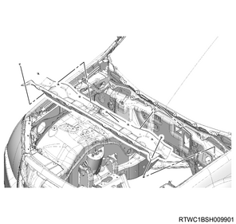
88. Wiper linkage connect
1. Connect the wiper linkage to vehicle.

- Nut
- Bolt
Tightening torque： 5.3 N・m { 0.5 kgf・m / 46 lb・in }
Note
- Connect the connector to the wiper motor.
89. Cowl cover installation
1. Install the grommet to the cowl panel.
Note
- Install with the top mark facing upward.
- After installing the grommet to the cowl panel, verify that it is installed securely.
- If the grommet drops off when it is pushed back into the cowl panel, install it again.

- Top mark
2. Install the cowl cover to the cowl panel.
3. Connect the washer hose to the clip.

- Grommet
- Connection of washer hose
90. Side cowl cover installation
1. Install the side cowl cover to the body.

- Side cowl cover
91. Wiper arm installation
1. Install the wiper arm to vehicle.
Caution
- Confirm that the wiper motor is stopped at the auto stop position.
Tightening torque： 31.0 N・m { 3.2 kgf・m / 22.9 lb・ft }

- 29 mm (1.14 in)
- 36.5 - 51.5 mm (1.44 - 2.03 in)
- 18 mm (0.71 in)
92. Wiper arm cover installation
1. Install the wiper arm cover to the wiper arm.
93. Engine hood assembly installation
1. Temporarily tighten the hinge bolt to the engine hood assembly.
Note
- Align the hinge with the marking made during removal.
2. Inspect the clearance.
Note
- Check the engine hood assembly and the fender.
3. Adjust the clearance to the specified value.
Note
- Adjust the installation of the engine hood hinge to adjust the clearance.

- Clearance: 4.0 mm {0.16 in}
- Height, level difference: -1.5 mm {-0.06 in}
Note
- Turn the hood rest to adjust its height, and adjust the level difference against the engine hood.
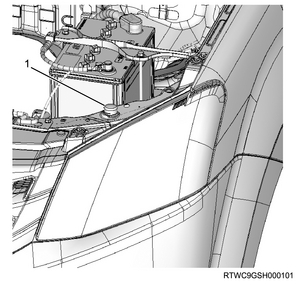
- Hood rest
4. Apply the grease to the striker.
Note
- Apply a thin layer of grease to the striker.
5. Install the engine hood garnish to the engine hood.
Note
- Tighten the 6 nuts to the specified torque.
Tightening torque： 6 N・m { 0.6 kgf・m / 53 lb・in }
6. Securely tighten the hinge bolt to the engine hood assembly.
Tightening torque： 6.5 N・m { 0.66 kgf・m / 58 lb・in }
7. Connect the tube to the washer nozzle.
94. Engine cover installation
1. Install the engine cover to the engine.

- Engine cover
95. Underguard installation
Note
- The following applies to models with an under air deflector.
1. Install the under air deflector to the frame.
Note
- Tighten the clip and the 5 bolts.
Tightening torque： 42 N・m { 4.3 kgf・m / 31 lb・ft }

- Bolt
- Clip
Note
- The following applies to models with front and rear underguard.
2. Install the rear underguard to the frame.
Note
- Tighten the 4 bolts.
Tightening torque： 42 N・m { 4.3 kgf・m / 31 lb・ft }
3. Install the front underguard to the frame.
Note
- Tighten the 5 bolts.
Tightening torque： 42 N・m { 4.3 kgf・m / 31 lb・ft }

- Front underguard
- Rear underguard
- Bolt
Note
- The following applies to models with front and rear underguard and an oil pan guard.
4. Install the rear underguard to the frame.
Note
- Tighten the 4 bolts.
Tightening torque： 42 N・m { 4.3 kgf・m / 31 lb・ft }
5. Install the oil pan guard to the frame.
Note
- Tighten the 4 bolts.
Tightening torque： 90 N・m { 9.2 kgf・m / 66.4 lb・ft }
6. Install the front underguard to the frame.
Note
- Tighten the 5 bolts.
Tightening torque： 42 N・m { 4.3 kgf・m / 31 lb・ft }

- Front underguard
- Oil pan guard
- Bolt oil pan guard
- Bolt
- Rear underguard
96. Engine oil filling
1. Replenish the engine with the engine oil.
Note
- Check the tightening of the oil pan drain plug.
Tightening torque： 44 N・m { 4.5 kgf・m / 32 lb・ft }
97. Coolant filling
1. Replenish the radiator with coolant.
Note
- Use the coolant contains 50 % anti-freeze solution.
- Pour coolant up to the filler neck.
2. Replenish the radiator reserve tank with coolant.
Note
- Pour coolant up to the MAX line.
3. Install the radiator cap to the radiator.
98. Battery ground cable connect
1. Connect the battery ground cable to the battery.
2. Close the engine hood assembly.
3. Lower vehicle.